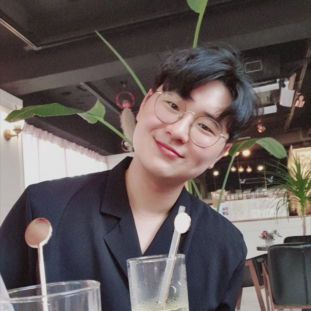
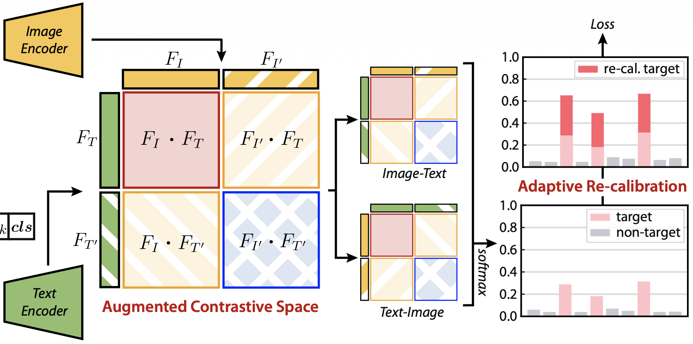
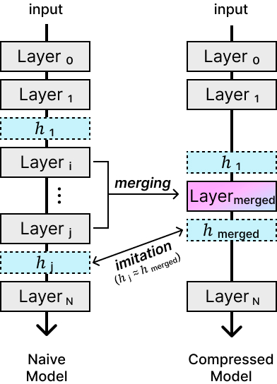
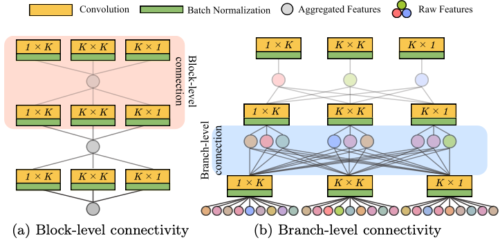
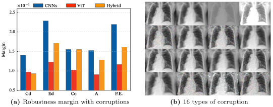
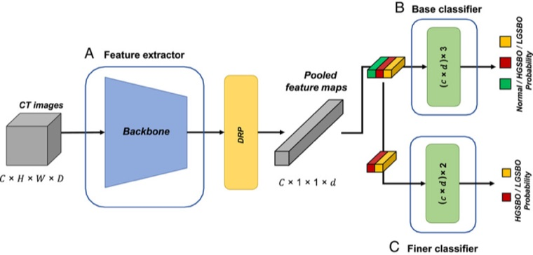
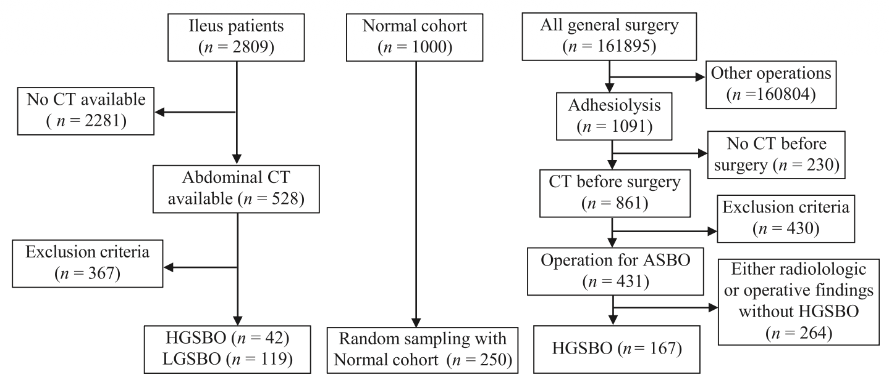

SOSeungmin Oh 오승민
Ph.D. Candidate, Computational Intelligence Lab, Ajou University
I work on making large neural networks efficient enough to run under real compute limits, on edge devices and inside robot control loops. My research covers vision backbones, LLM and VLM compression, and vision-language-action (VLA) models for robotic manipulation.
News
- Aug 2026Paper accepted to the British Machine Vision Conference (BMVC) 2026 (Re-calibrated Contrastive Loss for Semantic-Aligned Augmentation).
- Sep 2025Awarded the Next-Generation Science & Engineering Scholars Fellowship (NRF Korea).
- Apr 20251st place, IEEE Low-Power Computer Vision Challenge, Track 1, at the Computer Vision and Pattern Recognition (CVPR) 2025 workshop, deployed on Snapdragon via Qualcomm AI Hub.
- Sep 2024Paper accepted to the Asian Conference on Computer Vision (ACCV) 2024 (Neural Substitution for Branch-Level Re-parameterization).
- Sep 2024Filed a PCT patent on a neural-network CT triage classifier.
- Apr 2024Paper on the origins of CNN and ViT architectures published in Scientific Reports.
- Dec 2023Paper on CT-based small bowel obstruction triage published in the International Journal of Surgery.
Research
Efficient architectures & on-device deployment
Neural substitution extends re-parameterization from block-level to branch-level connectivity (ACCV 2024). The same drive toward efficiency led to the first-place on-device classification solution at the 2025 IEEE Low-Power Computer Vision Challenge, deployed on Snapdragon hardware via Qualcomm AI Hub.
Understanding CNN and ViT behavior
Why do CNNs and ViTs behave differently on medical scans? By redesigning robustness, invariance, and shape-texture analyses for medical data, we traced where each architecture's behavior originates (Scientific Reports, 2024).
Clinical prediction from 3D CT
A 3D CNN with a dual-branch classifier flags high-risk small bowel obstruction patients at 0.90 AUROC on a multi-center cohort (International Journal of Surgery, 2023), and the classifier was filed as a PCT patent.
Publications
-

Vision-LanguageContrastive LearningRe-calibrated Contrastive Loss for Semantic-Aligned Augmentation in Vision-Language Models
Fine-tuning a vision-language model compromises its generalization. Semantically aligned image-text augmentation, under a loss re-calibrated for multiple positives, keeps both.
-

Low-Power VisionEdge DeploymentEvaluation of Winning Solutions of 2025 Low Power Computer Vision Challenge
The 2025 challenge benchmarked efficient vision models on real edge hardware. This report covers the competition design and the winning entries, including our Track 1 solution.
-

Re-parameterizationEfficient ArchitecturesNeural Substitution for Branch-Level Network Re-parameterization
Re-parameterization usually works only within a block. Substituting local paths in training keeps branch-level connectivity and folds activations into the linear form.
-

Medical ImagingCNN/ViTModel AnalysisAnalyzing to Discover Origins of CNNs and ViT Architectures in Medical Images
Why do CNNs and ViTs behave differently on medical scans? We redo robustness, invariance, and shape-texture analyses to trace where each architecture's behavior originates.
-

Medical Imaging3D CNNClinical PredictionDeep Learning Using Computed Tomography to Identify High-Risk Patients for Acute Small Bowel Obstruction: Development and Validation of a Prediction Model
Judging who needs surgery for small bowel obstruction is hard from CT alone. A dual-branch 3D CNN flags high-risk patients at 0.90 AUROC on a multi-center cohort.
-

Medical ImagingPatentNeural Network Classifier for Predicting High-Risk Small Bowel Obstruction Using Abdominal CT Images
A neural-network classifier that reads abdominal CT to predict high-risk small bowel obstruction, filed as a PCT patent from the clinical study above.
Honors & Awards
- 20251st Place, IEEE Low-Power Computer Vision Challenge, Track 1, at the Computer Vision and Pattern Recognition (CVPR) 2025 workshop
- 2023Global Top 100, Google Solution Challenge, for Smiler, an expression-training app for children with ASD
- 2021Excellence Award, ICT Mentoring Conference (ACK 2021), KOSIA
- 2021Best Student Paper, First Prize, Korea Digital Contents Society 20th Anniversary Contest
Work in Progress
Seven papers under review.
- New VLA training mechanism — changing what the policy is trained to predict, so skills carry across robots instead of binding to one.
- Efficient VLA inference — cutting the compute spent on every control step while keeping task success.
- Closed-loop failure detection — noticing that an action is going wrong early enough for the policy to recover.
- Structured pruning for LLMs — holding accuracy when a large model is pruned down to a deployment budget.
- Scheduled model compression — ordering compression over the course of training rather than doing it all at once.
- Efficient test-time adaptation — adapting under distribution shift at inference time, cheaply and without collapse.
- Adaptive regularization — letting regularization respond to the data instead of applying one fixed strength.
Beyond Papers
I built and run our lab's GPU cluster, 16 nodes with eight RTX 3090s each. That means containerized provisioning, per-node CUDA isolation, and training jobs that run unattended for days. Day to day I write performance-minded C/C++ and Python, and I deploy models on-device with Qualcomm AI Hub. Outside of research, I taught AI tutorials for undergraduate research assistants and helped start the Google Developer Student Club chapter at Ajou University.